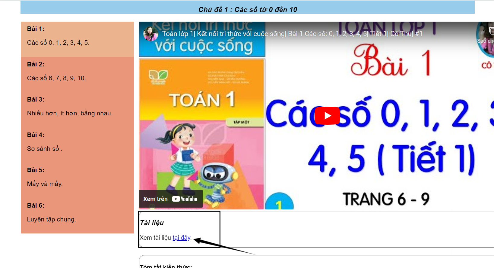
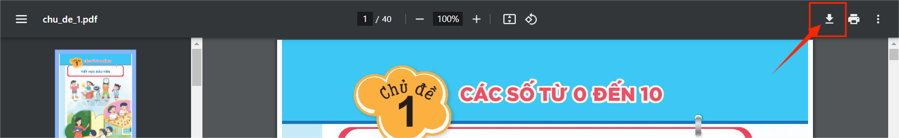
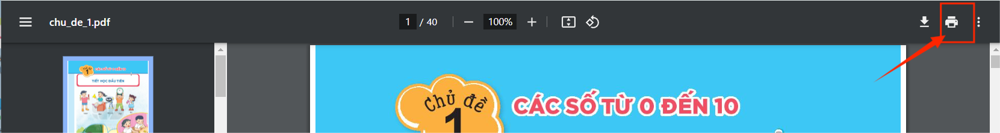

Để tải và in tài liệu bài giảng, trước tiên bạn cần ấn vào "tại đây" ở phần Tài liệu nằm phía dưới video bài giảng để mở tài liệu cần tải, in.

Khi file PDF đã được mở, bạn sẽ thấy có sẵn các tính năng tải xuống và in tài liệu. Để tải tài liệu về máy tính của bạn, hãy ấn vào nút "Tải xuống" ở góc trên cùng bên phải của trình xem PDF.

Nếu bạn muốn in tài liệu, hãy ấn vào nút "In" cũng nằm ở góc trên cùng bên phải. Điều này sẽ mở ra hộp thoại in, cho phép bạn chọn máy in và các tùy chỉnh in ấn khác.

Lưu ý rằng các tính năng tải xuống và in được tích hợp sẵn trong file tài liệu, vì vậy bạn không cần cài đặt thêm phần mềm hay công cụ bên ngoài.
Nếu bạn gặp bất kỳ vấn đề nào trong quá trình thực hiện, đừng ngại liên hệ với chúng tôi để được hỗ trợ thêm. Chúng tôi rất vui lòng được giúp đỡ bạn.